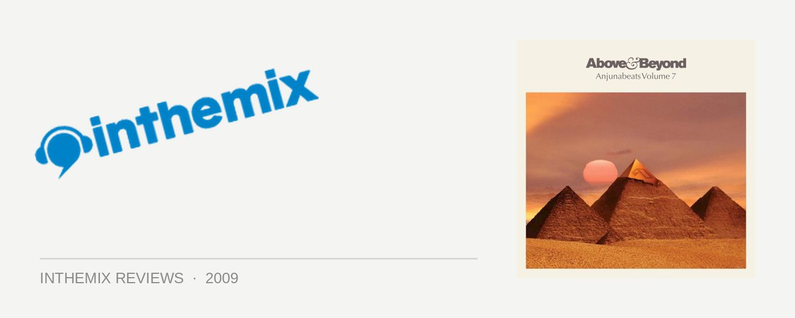

Various Artists - Anjunabeats vol. 7, mixed by Above & Beyond
It wasn’t that long ago that Above & Beyond were considered the thinking trance fan’s alternative to Tiesto or Oakenfold, but damn, look where they are now – a top 5 ranking in the DJ Mag poll, a radio show listened to by millions, and their Anjunabeats imprint one of the world’s most successful and influential trance labels. Not only are Jono, Tony and Paavo successful producers and performers in their own right, but they’ve actually been able to steer the direction of the genre with all the amazing musical talent they’ve fostered. And this brings us to the seventh volume of their winning Anjunabeats compilation, showcasing some of the label’s finest. They’ve laid down a formula with past installments that works perfectly – the first disc consists mostly of tunes from the Anjunadeep label, an offshoot focused more on the house and progressive end of the trance spectrum, while the second drives straight into uplifting trance territory. So how is the Anjunabeats stable travelling in late 2009?
The ‘Anjunadeep’ disc has arguably been the source of most of the ‘wow’ moments on recent Anjunabeats compilations. Progressive grooves laced with trancey melodies, the label’s tunes are weapons that work perfectly whether it’s a trance DJ warming up the crowd, or someone like Sasha or James Zabiela when they’re moving into peaktime. Things are off to a slightly speedier start this time around and only two tracks in, we get the disc’s finest moment in the form of a collaboration between two of Anjunadeep’s biggest stars – Canberra’s own Jaytech and Boom Jinx. Milano is a stormer that’s for sure, a big-room slice of prog with a huge bassline and a driving groove, but with still plenty of the trancey melodies the pair are known for. Boom Jinx & Andrew Bayer’s To The Six is another of the disc’s finest cuts; featuring a main hook that’s pure techno, it’s otherwise full of rich, warm melodies, and it’ll work as the perfect mellow opener to an Above & Beyond set.
The mix shifts gradually into some pumping progressive trance (probably a little too quickly for my liking), the best of which you’ll find with Oliver Smith’s exhilarating Cadence and the huge electro riff of Above & Beyond’s new single Anjunabeach. It’s all just a little too bangin’ though; nearly everyone who listened to last year’s collection of Anjunadeep gems would rank that mix a masterpiece, and when you stack this year’s offering up against that sublime collection of deep, trancey grooves, this year’s can’t help but come off as a little ordinary.
However, it’s a different story on the second disc. It’s worth mentioning that for the past few installments, the ‘upfront’ Anjunabeats mix has fallen short of the mark in a lot of ways; it’s as if Above & Beyond thought that with the warm-up out of the way, it’d be sufficient to just slam into top gear and leave it there for the next 80 minutes. But it looks like they realised they needed to step things up again, as here they’ve delivered the best uplifting trance mix you’ll have the pleasure of listening to all year. If the ‘progressive’ disc wasn’t progressive enough, then we’ve been well compensated here as while it’s storming and uplifting, the focus is decidedly forward-thinking and innovative, steering away from the trap of sugary female vocals and endless breakdowns and buildups that trance has clumsily been stumbling back into this year. Heck, there’s barely even a vocal to be found at all. It shows that the more euphoric side of the genre doesn’t have to be predictable – there’s such a wide palette of sounds to draw from, if the producers just look in a few different directions.
The mix shifts from the euphoric melodies of Stoneface & Terminal’s mix of Callista, to the driving basslines of Lange’s Wanderlust, to softer melodic numbers and then back again. Sunny Lax’s Misgrey is a perfect example of where trance should be at in 2009: tricking the listener with a shift into a melodic breakdown, before slapping you around the face when it slams into a rolling bassline. And who would have thought we’d have something as grinding and clicky as Matt Zoh’s mix of Eclipse on the tail end of an Anjuabeats mix? Above & Beyond have obviously been stashing aside the label’s real gems all year in anticipation, as literally, every last track is a stormer. But rather than flatlining the energy in top gear, it all works properly as an actual ‘mix’, with a drive that carries you right through to the end. Like a good trance mix should, it takes you back to the club at 3am and you’ve got lasers streaming all over your face, completely in the grip of what you’re hearing. And you’re loving it.
Flipping the trend we’ve seen with recent releases, this year’s Anjunabeats features a first disc that’s ‘good enough’, while the second is superb. So hats off to the Anjunabeats crew; this year even Armin van Buuren was struggling to russle up enough memorable tunes to fill a double-disc compilation, but going off Anjunabeats vol. 7 as evidence, Above & Beyond are the saviors of uplifting trance in 2009. Bring on Future Music Festival 2010!